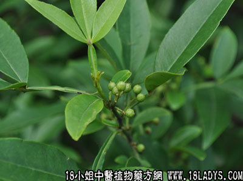

(本文解释权归中药材天地网兄弟站-18小姐中医植物药方网所有,如需转载请注明出处)

植物名：竹叶椒。
生长环境：本品为灌木或小乔木。生长于山地灌木丛中或路旁、疏林中或石山上。
分布：广东省除海南以外、各地山区可见，此外我国东南和西南部各省均有生产。
入药部分：叶。
采集期：全年。
自采地点：郊外。
性味：性温、味辛微苦、气芳香。
功能：散瘀、消肿、活血、止痛。
主治、用量和用法：①风湿筋骨痛：用叶适量、煎水外洗；②跌打瘀肿：干叶为末，加酒煮热敷患处。
（方歌）消肿止痛铁罗汉，能疗风湿诸症状，跌打煮酒乘热敷，瘀肿他哦痛红皆扫荡。
附录：（果）治蛀牙痛：干果5钱、酒精2两、浸半月，将此酒塗患处。
(本文解释权归中药材天地网兄弟站-18小姐中医植物药方网所有,如需转载请注明出处)